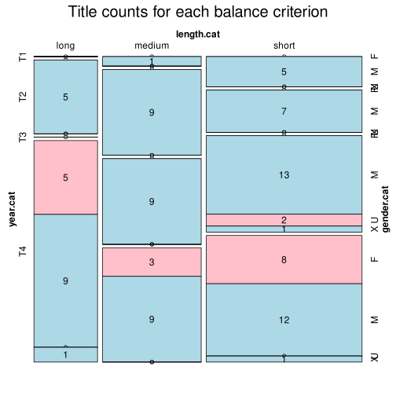

Click on a column heading to sort. Click on a text identifier to read the text (may not work in older browsers).
| Identifier | Encoding | Pages | Words | (Size) | Date (Slot) | Title | Author | Sex | Reprints |
|---|---|---|---|---|---|---|---|---|---|
| ROM001 |
eltec-1 | 128 | 9817 | (medium) !! | 1894 (T3) | Roșcan Haiducul. Nuvelă ilustrată cu două gravuri | Anonymous | U | low |
| ROM002 |
eltec-1 | 195 | 30210 | (short) | 1894 1895 (T3) | Blestemul. Sfârșitul blestemului | Bălănescu, Simion (?-?) | M | low |
| ROM003 |
eltec-1 | 46 | 29942 | (short) | 1870 (T2) | Geniu Pustiu | Eminescu, Mihai (1850-1889) | M | high |
| ROM004 |
eltec-1 | 507 | 124789 | (long) | 1908 (T4) | Haiducul | Dumbravă, Bucura (Fany Seculici/ Fanny Szeculicz)(1868-1926) | F | low |
| ROM005 |
eltec-1 | 95 | 28565 | (short) | 1923 (1883) (T3) | Ghiță Cătănuță, căpitan de haiduci | Macri, Panait (1863-1932) | M | low |
| ROM006 |
eltec-1 | 479 | 117922 | (long) | 1873 (T2) | Iancu Jianu, Haiducul | Popescu, N.D. (1843-1921) | M | low |
| ROM007 |
eltec-1 | 128 | 30119 | (short) | 1892 (T3) | Corbea. Istorie originală ilustrată cu 7 gravuri | Stoenescu, Stefan (psedo?) | X | low |
| ROM008 |
eltec-1 | 136 | 31921 | (short) | 1892 (1882) (T3) | Boierii haiduci. Nuvela originală compusă de N.D. Popescu cu patru ilustrațiuni | Popescu, N.D. (1843-1921) | M | low |
| ROM009 |
eltec-1 | 70 | 28944 | (short) | ? (T4) | THALASSA | Macedonski, Alexandru (1854-1920) | M | high |
| ROM010 |
eltec-1 | 199 | 63856 | (medium) | 1894 (T3) | Dan | Vlahuță, Alexandru (1858-1919) | M | high |
| ROM011 |
eltec-1 | 97 | 29817 | (short) | 1975 (1872) (T2) | Fulga sau ideal și real | Grandea, Grigore H. (1843-1897) | M | high |
| ROM012 |
eltec-1 | 167 | 56691 | (medium) | 1887 (T3) | Vlăsia sau ciocoii noi | Grandea, Grigore H. (1843-1897) | M | high |
| ROM013 |
eltec-1 | 235 | 56507 | (medium) | 1986 (1865) (T2) | La Gura sobei | Ionescu, Radu (1834-l872) | M | high |
| ROM014 |
eltec-1 | 129 | 26030 | (short) | 1986 (1865) (T2) | Catastihul amorului | Ionescu, Radu (1834-l872) | M | high |
| ROM015 |
eltec-1 | 67 | 22860 | (short) | 1974 (1861-l862) (T2) | Don Juanii din București | Ionescu, Radu (1834-l872) | M | high |
| ROM016 |
eltec-1 | 120 | 36282 | (short) | 1984 (1855) (T1) | Manoil | Bolintineanu, Dimitrie (1819-1872) | M | high |
| ROM017 |
eltec-1 | 202 | 65702 | (medium) | 1862 (T2) | Elena. Roman original de datine politic filosofic | Bolintineanu, Dimitrie (1819-1872) | M | high |
| ROM018 |
eltec-1 | 183 | 60232 | (medium) | 1984 (1864) (T2) | Doritorii nebuni | Bolintineanu, Dimitrie (1819-1872) | M | low |
| ROM019 |
eltec-1 | 164 | 38783 | (short) | 1920 (T4) | Matei Dumbărău. Roman | Demetrius, V. (1878-1942) | M | low |
| ROM020 |
eltec-1 | 189 | 42607 | (short) | 1920 (1920) (T4) | Oraşul bucuriei. Roman | Demetrius, V. (1878-1942) | M | low |
| ROM021 |
eltec-1 | 117 | 23575 | (short) | 1920 (1920) (T4) | Păcatul Rabinului. Roman | Demetrius, V. (1878-1942) | M | low |
| ROM022 |
eltec-1 | 116 | 29807 | (short) | 1930 (1894) (T3) | HAIDUCUL TANDURA. SCRIERE ORIGINAL, CU ADAUSE SI MODIFICARI | MACRI, P. (1863-1932) | M | low |
| ROM023 |
eltec-1 | 142 | 23370 | (short) | 1892 (1892) (T3) | Tîlharul Fulger. Roman criminal | Ighel, Ilie (1870-1938) | M | low |
| ROM024 |
eltec-1 | 381 | 111825 | (medium) !! | 1947 (1912) (T4) | Pandurul. Ediția VIII-a | Dumbravă, Bucura (1868-1926) | F | low |
| ROM025 |
eltec-1 | 435 | 150879 | (long) | 1862 (T2) | Mistere din București | Bujoreanu, Ioan M. (1834-1899) | M | low |
| ROM026 |
eltec-1 | 144 | 35076 | (short) | 1899 (1899) (T3) | Bostan. Haiduc de peste Milcov | Macri, P. Panait (1863-1932) | M | low |
| ROM027 |
eltec-1 | 160 | 40841 | (short) | 1896 (T3) | Fontana zânelor | Baronzi, G. (1828-1896) | M | low |
| ROM028 |
eltec-1 | 219 | 56161 | (medium) | (1898)1911 (T3) | Suflete obosite | Nottara, Constantin I.A. (1872-1923) | M | low |
| ROM029 |
eltec-1 | 231 | 51043 | (medium) | 1881 (T3) | BRAZI SI PUTREGAIU. MORAVURI PROVINCIALE | Xenopol, Nicolae (1859-1917) | M | low |
| ROM030 |
eltec-1 | 209 | 42357 | (short) | 1903 (T4) | Spre desrobire. Roman | Ianculescu de Reus, Eugenia (1866-1938) | F | low |
| ROM031 |
eltec-1 | 500 | 127251 | (long) | 1861 1863 1886 (T2) | Mysterele Casatoriei | Aricescu, C.D. (1823-1886) | M | low |
| ROM032 |
eltec-1 | 129 | 22563 | (short) | 1890 (T3) | Banditul Rîureanu sau un înger în infern. Roman dramatic senzațional de G. Rădulescu | Rădulescu, G. (Rădulescu-Niger, N.G?) (1861-1944) | M | low |
| ROM033 |
eltec-1 | 81 | 15530 | (short) | 1920 (T4) | Ruxanda Haiduciasa. Nuvelă Istorică Națională | Anonymous | X | low |
| ROM034 |
eltec-1 | 164 | 43740 | (short) | 1855 (T1) | Aldo si Aminta | Boerescu, C. (1836-1908) | M | low |
| ROM035 |
eltec-1 | 185 | 35203 | (short) | 1908 (T4) | Martirii. Roman | Hodoş, Constanţa (1861-1934) | F | low |
| ROM036 |
eltec-1 | 235 | 44498 | (short) | 1902 (T4) | Voinţă. Roman | Ianculescu de Reus, Eugenia(1866-1938) | F | low |
| ROM037 |
eltec-1 | 161 | 55720 | (medium) | 1893(1903) (T3) | Radu Anghel, Căpitan de Tâlhari | Popescu, N.D. (1843-1921) | M | low |
| ROM038 |
eltec-1 | 212 | 50022 | (medium) | 1902 (T4) | Cele şapte candeli. Pe Catafalc. Roman creştin | Dragomirescu, Iuliu (1880-1949) | M | low |
| ROM039 |
eltec-1 | 141 | 30517 | (short) | 1882 (T3) | Codreanu Mare Haiduc National | D.D.P (pseudo) | U | low |
| ROM040 |
eltec-1 | 241 | 59604 | (medium) | 1912 (T4) | Fata Tatii. Roman de moravuri | Gheorghiu, Smaranda, pseudo: Smara (1857-1944) | F | low |
| ROM041 |
eltec-1 | 311 | 86053 | (medium) | 1873 (T2) | MIHAI VEREANU | NEGRUZZI, IACOB (1842-1932) | M | low |
| ROM042 |
eltec-1 | 298 | 46696 | (short) | 1906 (T4) | Două neamuri | Sandu-Aldea, C. (1874-1927) | M | low |
| ROM043 |
eltec-1 | 156 | 33222 | (short) | 1912 (T4) | Pe Mărgineanca | Sandu-Aldea, C. (1874-1927) | M | low |
| ROM044 |
eltec-1 | 224 | 50985 | (medium) | 1873 (T2) | UNU FUNCTIONARU SINUCISU. FRATELE SI SORA | Pelimon, Alessandru(1822-1881) | M | low |
| ROM045 |
eltec-1 | 296 | 76340 | (medium) | 1863 (T2) | CIOCOII VECHI ŞI NOI SAU „CE NAŞTE DIN PISICĂ ŞOARECI MĂNÂNCĂ"!. Romanţ original | Filimon, Nicolae(1819-1865) | M | high |
| ROM046 |
eltec-1 | 47 | 13258 | (short) | 1855 (T1) | Logofătul Baptiste Veleli. Episod istoric din secolul al XVIII lea | Urechia, V.A. (1834-1901) | M | low |
| ROM047 |
eltec-1 | 427 | 105552 | (long) | 1903 (T4) | CALEA ROBILOR | Prasin, Spiru(1864-1904) | M | low |
| ROM048 |
eltec-1 | 201 | 53514 | (medium) | 1891 (T3) | Avram Iancu, regele Carpaţilor, continuatorul operii lui Horia. Roman istoric, după publicaţiuni şi comunicări date de martori oculari şi părtaşi la lupte | Pop Florantin, Ioan (1843-1936) | M | low |
| ROM049 |
eltec-1 | 63 | 10408 | (short) | 1882 (T3) | Decebal. Nuvelă istorică | Pop Florantin, Ioan (1843-1936) | M | low |
| ROM050 |
eltec-1 | 110 | 28916 | (short) | 1885 (T3) | Horea. Roman original (după actele istorice publicate de A. Papiu, A. Odobescu, N. Densușianu, și tradiție) | Pop-Florantin, Ion (1843-1936) | M | low |
| ROM051 |
eltec-1 | 119 | 36383 | (short) | 1883 (T3) | COLIBA MĂRIUCĂI. Roman naţional | Urechia, V. A (1834-1901) | M | low |
| ROM052 |
eltec-1 | 110 | 28356 | (short) | 1907 (T4) | TĂNASE SCATIU. Roman | Zamfirescu, Duiliu (1858-1922) | M | high |
| ROM053 |
eltec-1 | 213 | 51974 | (medium) | 1902 (T4) | În Războiu. Roman | Zamfirescu, Duiliu (1858-1922) | M | low |
| ROM054 |
eltec-1 | 360 | 78337 | (medium) | 1904 (T4) | VALEA ALBĂ. Roman eroic. 1476 | Becescu-Silvan, Gh. (1875-1924) | M | low |
| ROM055 |
eltec-1 | 360 | 52745 | (medium) | 1906 (T4) | Pentru Neatîrnare 1877-78. Roman răsboinic | Becescu-Silvan, Gh. (1875-1924) | M | low |
| ROM056 |
eltec-1 | 971 | 202851 | (long) | 1904 (T4) | Cu paloșul. Poveste vitejască din vremea descălecatului Moldovei | Rosetti, Radu (1853-1926) | M | low |
| ROM057 |
eltec-1 | 182 | 69118 | (medium) | 1912 (T4) | Păcatele Sulgeriului | Rosetti, Radu (1853-1926) | M | low |
| ROM058 |
eltec-1 | 164 | 35117 | (medium) !! | (T2) | Misterul din Turnul Eiffel sau resbunarea unei principese ruse | Alexandrescu, Alexandru I. | M | high |
| ROM059 |
eltec-1 | 367 | 101267 | (long) | 1907 (T4) | Părinți și Copii. Roman | Nadejde, Sofia (1856-1946) | F | low |
| ROM060 |
eltec-1 | 405 | 127125 | (long) | 1903 (T4) | Patimi. Roman din viața românească | Nadejde, Sofia (1856-1946) | F | low |
| ROM061 |
eltec-1 | 361 | 107186 | (long) | 1906 (T4) | Robia banului. Roman | Nadejde, Sofia (1856-1946) | F | high |
| ROM062 |
eltec-1 | 187 | 53318 | (medium) | 1887 (T3) | DINU MILIAN | Mille, Constantin (1861-1927) | M | low |
| ROM063 |
eltec-1 | 256 | 79903 | (medium) | 1898 1937 (T3) | DIN VREMEA LUI CĂPITAN COSTACHE | Antemireanu, Alexandru (1877-1910) | M | low |
| ROM064 |
eltec-1 | 80 | 13473 | (short) | 1909 (T4) | Misterul morţei Jeanei Cristescu | Caliga, George (1878-?) | M | low |
| ROM065 |
eltec-1 | 166 | 26315 | (short) | 1920 (T4) | Lulù. Roman | Lovinescu, E. (1881-1943) | M | low |
| ROM066 |
eltec-1 | 142 | 21650 | (short) | 1913 (T4) | Pe urma războiului. Roman | Xenopol, Adela (1861-1939) | F | high |
| ROM067 |
eltec-1 | 80 | 23398 | (short) | (T1) | Ursita | Petriceicu Hasdeu, Bogdan (1838-1907) | M | low |
| ROM068 |
eltec-1 | 330 | 114208 | (long) | (T4) | Orfanii neamului. Roman Naționalist | Radulescu-Niger, N. (1861-1944) | M | low |
| ROM069 |
eltec-1 | 297 | 100005 | (long) | (T4) | Fete de Azi | Speranția, Th. (1856-1929) | M | low |
| ROM070 |
eltec-1 | 275 | 54423 | (medium) | 1920 (T4) | Băiatul Mamii. Roman Educativ | Gheorghiu, Smaranda, pseudo: Smara (1857-1944) | F | low |
| ROM071 |
eltec-1 | 390 | 100098 | (long) | 1906 (T4) | Mara. Roman | Slavici, Ioan (1848-1925) | M | high |
| ROM072 |
eltec-1 | 335 | 79106 | (medium) | 1902 (T4) | Din Bĕtrânĭ. Narațiune istorică | Slavici, Ioan (1848-1925) | M | high |
| ROM073 |
eltec-1 | 268 | 69929 | (medium) | 1920 (T4) | Din două lumi. Narațiune | Slavici, Ioan (1848-1925) | M | high |
| ROM074 |
eltec-1 | 319 | 117618 | (long) | 1910 (T4) | Înstrăinaţii | Moruzi, Dumitru C. (1850-1914) | M | high |
| ROM075 |
eltec-1 | 229 | 80132 | (medium) | 1914 (T4) | Moartea lui Cain. Roman social | Moruzi, Dumitru C. (1850-1914) | M | high |
| ROM076 |
eltec-1 | 567 | 152436 | (long) | 1920 (T4) | Ion | Rebreanu, Liviu (1885-1944) | M | high |
| ROM077 |
eltec-1 | 592 | 170958 | (long) | 1914 (T4) | Arhanghelii | Agârbiceanu, Ion (1882-1963) | M | high |
| ROM078 |
eltec-1 | 441 | 136092 | (long) | 1912 (T4) | Pribegi în Ţară Răpită. ROMAN SOCIAL BASARABEAN | Moruzi, Dumitru C. (1850-1914) | M | high |
| ROM079 |
eltec-1 | 221 | 58162 | (medium) | 1904 (T4) | Armânda | Vulcan, Petru (1866-1922) | M | low |
| ROM080 |
eltec-1 | 309 | 77873 | (medium) | 1883 (T3) | Babeta. Roman original | Alexi, Theohar (1843-1912) | M | low |
| ROM081 |
eltec-1 | 107 | 18589 | (short) | 1916 (T4) | DATORII UITATE. Documente omenești. Nuvele | Bart, Jean/ Botez, Eugeniu P. (1874-1933) | M | low |
| ROM082 |
eltec-1 | 476 | 69251 | (medium) | 1906 (T4) | În luptă | Bacaloglu, Elena (1878-1947) | F | low |
| ROM083 |
eltec-1 | 148 | 36463 | (short) | 1918 (T4) | Între artă și iubire. Roman | Cassvan, Sarina (1894-1978) | F | low |
| ROM084 |
eltec-1 | 84 | 21717 | (short) | 1899 (T3) | În anul 4000 sau o călătorie la Venus | Anestin, Victor (1875-1918) | M | low |
| ROM085 |
eltec-1 | 235 | 101059 | (long) | 1911 (T4) | Un proces pierdut. Roman social | Teodoru, Olimpia [Olteo] () | X | low |
| ROM086 |
eltec-1 | 163 | 32066 | (short) | 1871 (T2) | IN JASSY | Miller, Theodor A. () | M | low |
| ROM087 |
eltec-1 | 152 | 27861 | (medium) !! | 1916 (T4) | Getta. Roman | Mestugean, V. (1869-1942) | M | low |
| ROM088 |
eltec-1 | 157 | 26969 | (short) | 1899 (T3) | Prostituata (Roman) | Iorgulescu, Aurel (1880-?) | M | low |
| ROM089 |
eltec-1 | 129 | 28429 | (short) | 1875 (T2) | Scarlat. Romanu originalu | Fundescu, I. C. (1836-1904) | M | low |
| ROM090 |
eltec-1 | 210 | 36246 | (short) | 1908 (T4) | Dreptul Vieței. Roman | Lecca, Irina G. (1881-1953) | F | low |
| ROM091 |
eltec-1 | 226 | 42433 | (short) | 1920 (T4) | Marcu Ulpiu Traian Stănoiu. Roman | Lecca, Irina G. (1881-1953) | F | low |
| ROM092 |
eltec-1 | 186 | 39658 | (short) | 1910 (T4) | Pe urma dragostei. Roman | Lecca, Irina G. (1881-1953) | F | low |
| ROM093 |
eltec-1 | 153 | 30206 | (short) | 1911 (T4) | Anna (Ceea ce nu se poate). Roman | Zamfirescu, Duiliu (1858-1922) | M | high |
| ROM094 |
eltec-1 | 109 | 26969 | (short) | 1903 (T4) | Dușmănie. Roman | Moldovan, Vasile E. (1881-1924) | M | low |
| ROM095 |
eltec-1 | 468 | 115367 | (long) | 1862 (T2) | Misterele Bucurescilor | Baronzi, George | M | low |